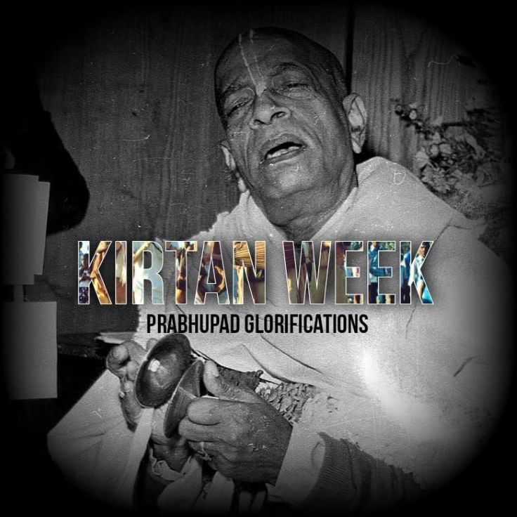

Kirtan Week

Hare Krsna dear Prabhupādānugās!
Please accept my humble obeisances.
As Today is the divine appearance of Śrīla Prabhupāda's Kirtan-Chandra moon of kirtana HH Visnūjana Swāmi, I would like to announce this entire week as Kirtana Week. In this week we all can explore Kirtans of our beloved ācārya His divine grace A.C Bhaktivedanta Swāmi Śrīla Prabhupāda and his disciples like HH Visnūjana Swāmi, Sripad Aindra Prabhu, HH loknāth Swāmi, HG Agnidev Prabhu, HG Vaisesika Prabhu and many such Moons!.
Admin : Because he brought Back to Godhead Down on this planet. If he can bring whole spiritual world here, taking this insignificant soul back home? What is the difficulty?
From Prabhupad Glorifications, I will be talking on Śrīla Prabhupāda's Kirtan Standards which he wanted all of us to follow in his International Society.
Send us your Recommendations on our Instagram handle, prabhupad_glorifications
Stay tuned!
Harināma Sankirtan Ki jay!
Jay Śrīla Prabhupāda!
Article 1 : Sargal Singh is dead.
Article 2 : Problematic tunes.